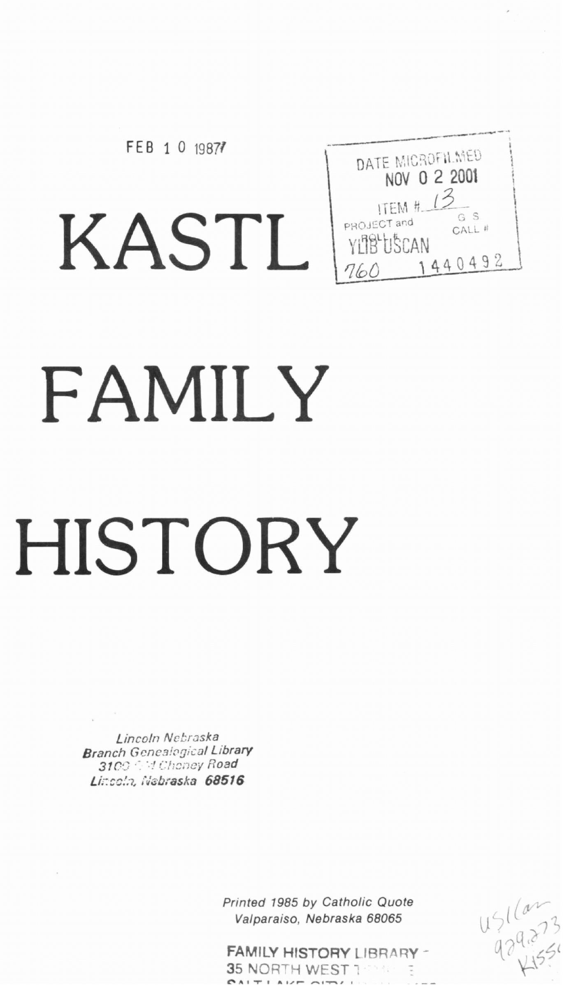

The book · Front matter
Title page


Transcription
# KASTL FAMILY HISTORY
Printed 1985 by Catholic Quote Valparaiso, Nebraska 68065
Transcriber’s notes
Title page. Only printed text is the title and the printer's imprint; everything else is library stamps/handwriting. The Salt Lake City stamp line is cut off at the bottom edge.
Library stamps and handwriting (not part of the book)
- Date stamp, upper left: FEB 1 0 1987 (last digit overstruck, reads like 19877)
- Boxed microfilm stamp, upper right: DATE MICROFILMED NOV 0 2 2001; ITEM # 13 (handwritten); PROJECT and ROLL # YLIB USCAN 760 (760 handwritten); G S CALL # 1440492
- Library stamp, lower left (italic, partly faded): Lincoln Nebraska / Branch Genealogical Library / 3100 [Old?] Cheney Road / Lincoln, Nebraska 68516
- Library stamp, bottom (partly cut off): FAMILY HISTORY LIBRARY / 35 NORTH WEST T[EMPLE] / SALT LAKE CITY ...
- Handwritten call number, lower right margin: US/Can 929.273 K155[?] (last characters cut off at edge)